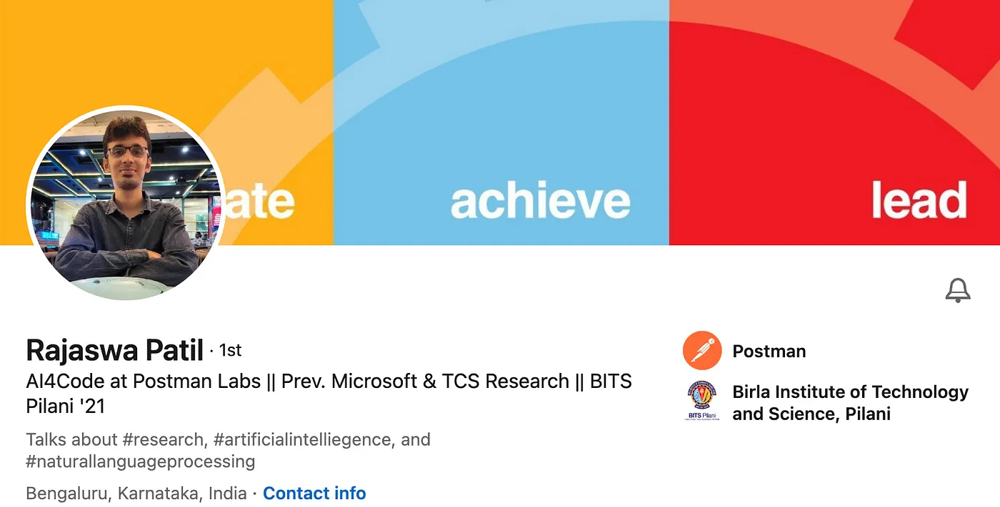

by Anshuman Mishra and Abheesht Sharma
The AI world is brimming with talent. Folks in the AI industry and the research world are continuously pushing the boundaries of innovation. With this interview series, we want to focus on bringing these inspiring (and possibly unheard of) stories out into the world — their struggles, their triumphs and their journey. We will be conversing with people we have looked up to, and still look up to for their unparalleled contributions to the AI world. We call this interview series AI Chronicles.
Rajaswa’s Stellar Profile Today, we are honored to have Rajaswa Patil with us. Rajaswa, who graduated in 2021 from BITS Goa, has already had a chequered career so far. He started with a Pre-doctoral position at TCS Research, before working at Microsoft as a Research Fellow. He now works at Postman Labs as an AI Research Associate. Rajaswa is leveraging Generative AI and Large Language Models (LLMs) to build “Postbot” at Postman.
Rajaswa is one of those people with whom you can never have a meaningless conversation. He is a cornucopia of knowledge, and always has tidbits of useful information to give out, not just restricted to AI or tech. Before he joined the industry, Rajaswa introduced a research culture in NLP at BITS Goa. He is one of the reasons why I, Abheesht, was able to get out of my initial failures in research and actually get some papers published during my undergrad.
Let’s begin!
Anshuman & Abheesht: Hello, Rajaswa! Thank you for doing this!
Rajaswa: Hi, thanks for having me!
Abheesht: Before we even start this interview, I want to get one heavy question out of the way 😂. What is your opinion on whether LLMs are sentient? Do you think LLMs are intelligent? Which side of the debate are you on?
Rajaswa: I don’t have a strong opinion on this matter, as I find it challenging to provide precise definitions for terms like “sentient” and “intelligent.” The complexity deepens when we consider the broader concept of Artificial General Intelligence (AGI).
To gain a more informed perspective on sentience and AGI, I’ve been delving into a book called “Superintelligence” by Nick Bostrom. I highly recommend this book to anyone curious about these questions. It offers valuable insights into the subject.
One point we can generally agree upon is the potential for computational modeling of human-like intelligence in the future. Human intelligence is the result of millions of years of evolutionary computation, providing us with a relatively intelligent blank slate at birth, which then undergoes further training to reach adult human-level intelligence. In many ways, we’re already making significant strides in engineering computational systems that can provide a head start equivalent to millions of years of evolution in just a month of model pre-training.
However, there are still significant challenges to overcome. Limitations in computational power, data availability, data modalities (which may require more sophisticated model architectures), and other factors are currently hindering our progress. Nevertheless, we’re making rapid advancements toward achieving human-level intelligence in machines.
Anshuman: You’ve done your Bachelor’s in Electrical Engineering. What brought you to data science and ML? Please tell the reader about your Machine Learning journey!
Rajaswa: My journey in engineering began in 2017, and my passion for Computer Science was evident from the start. However, despite my enthusiasm, I couldn’t secure a spot in a prestigious Computer Science program at any institute. I faced a difficult choice between the branch of study and the quality of peers and the prevailing “coding culture.” In the end, I made the decision to pursue Electrical Engineering at BITS Goa over Computer Science/Information Technology programs at institutions like COEP Pune and IIIT Delhi. What influenced my choice was BITS Goa’s remarkable achievement of having the highest number of Google Summer of Code (GSoC) selections across the country in 2017, with many of those selections coming from students with non-CS backgrounds. This spoke volumes about the thriving tech culture at BITS Goa.
The year 2017 marked the rapid rise of Machine Learning and Deep Learning among the tech community. Platforms like Kaggle and Google Colab were emerging, creating new opportunities. Two key factors drew me towards Data Science and Machine Learning during this period. First, there were on-campus courses and bootcamps taught by senior students through programs like CTE or QSTP, which provided valuable insights into these fields. Second, my brother served as a project mentor for Udacity’s Self-Driving Car Nanodegree program, introducing me to the fascinating world of AI and its potential for lucrative careers. This initial exposure piqued my interest, and as I explored further, my fascination with these fields deepened.
I made a bold decision during this time by forgoing a summer internship offered by BITS in favor of a Summer Internship at IIT Bombay, where I worked on Information Retrieval and Natural Language Processing (NLP). This experience opened my eyes to the significance of research papers in the field of AI, and I learned about prestigious conferences like ACL and EMNLP. I returned from IIT Bombay with a strong determination to publish my own research and started participating in shared-tasks like SemEval. In 2020, our efforts resulted in the publication of three papers. This success led to the establishment of the Language Research Group (LRG) at BITS Goa.
NLP was not a popular choice at the time, as it was more challenging to program compared to some other fields, and it lacked the visual appeal of areas like Computer Vision with GANs and Image Segmentation. However, our unique focus on NLP gave us a distinct advantage. The Language Research Group thrived, and we all built impressive profiles for ourselves in the field, thanks to our work in NLP.
Abheesht: In my conversations with you back in 2021, I remember how eager you were to take up a PhD in Computational Linguistics. What made you change your mind? Why did you decide to ply your trade in the tech industry over choosing a career in academia? Have you completely closed the door on doing a PhD in the future?
Rajaswa: Indeed, I had been contemplating pursuing a PhD since my sophomore year. Teaching has always been a passion of mine, and I could envision myself in academia. However, I made the choice to remain in the industry for several reasons, a mix of personal and professional considerations.
On a personal level, I had originally envisioned a future where I would build my academic career in the West while also starting a family. Unfortunately, a series of unforeseen events led me to reconsider and ultimately give up on that dream. It became clear to me that academia, regardless of the location, would impose significant limitations on both my social and financial freedom. This realization played a significant role in shaping my decision to remain in the industry.
When I turned 23, my friends gifted me “The Almanack Of Naval Ravikant”, and within its pages, I stumbled upon a quote that left a profound impact on me, particularly concerning Applied Scientists:
Society, business & money are downstream of technology, which is itself downstream of science. Science applied is the engine of humanity.
Corollary: Applied Scientists are the most powerful people in the world. This will be more obvious in coming years.
It doesn’t take a genius to recognize that AI is poised to become one of the most significant advancements of the 21st century. This quote forced me to reevaluate how I could position myself in the midst of this historic progression. At the time, I had been immersed in the AI4Code domain since my graduation, and it was evident that this field was already undergoing substantial transformations with the emergence of groundbreaking tools like Copilot during the Large Language Model era. The evidence was right before my eyes, affirming the relevance and power of applied scientists in shaping the future.
During that period, I was actively preparing for my PhD applications, juggling tasks like publishing papers at TCS Research and taking exams like GRE and TOEFL. It was during this time that Sumit Gulwani, a luminary in the field of AI4Code, approached me with an intriguing opportunity: a Research Fellowship at his team, Microsoft PROSE. This offer presented an industry alternative to pursuing a PhD. It entailed the possibility of joining the team as a Research Fellow, followed by a role as a Research Associate for 3–4 years, with a smooth transition into a full-time Scientist position, all without the need for a Master’s or PhD. This proposal put me in a considerable dilemma because, by then, I had more or less ruled out the traditional academic path and was leaning towards an industry career. Pursuing a PhD for an industry position seemed less attractive in comparison to this enticing offer.
Despite my confusion, I sought counsel from a wide range of individuals with diverse backgrounds and varying levels of experience. However, even after these discussions, I found it challenging to make a decision. Eventually, I chose to move forward with an industry career primarily because it offered greater flexibility compared to the commitment required for a PhD.
My perspective, then and now, is that the industry holds immense potential for value creation. I believe this trend will continue for the next few years. With substantial investments from Big Tech companies, investors, and governments pouring into AI, there is no doubt that the industry is where the action is. Many top AI/non-AI academics worldwide are either launching startups, contributing to open-source projects, or collaborating with big tech firms and governments to apply AI in practical contexts. It’s evident that most major advancements, whether theoretical or practical, are emerging from the industry. This is because the industry boasts the necessary resources and motivation.
As of today, this is where I want to be. However, I haven’t entirely abandoned my PhD aspirations. I do envision pursuing a PhD at some point, but it will likely be a part-time endeavor and may not necessarily be in Computer Science, although it will remain closely related to AI. I anticipate that this plan will materialize several years down the line, possibly 5 to 6 years from now, at the earliest.
Abheesht: Your journey so far has been inspirational. You come from a third tier town, and did not have the opportunities one has in bustling, metropolitan cities. You fought all the odds, made it to a reputable college, performed research and now work at an enviable position at Postman. Tell us a bit more about your struggles, say, the culture shock you faced when you joined college, or how you gained the confidence to rub shoulders with the best in the business.
Rajaswa: Honestly, I’ve been incredibly fortunate in my life journey. Despite hailing from a Tier-3 city, I’ve had the privilege of a strong educational foundation — a bit like being a big fish in a small pond. My father holds a PhD in Biotechnology, and my mother earned a Master’s degree in Organic Chemistry. Moreover, my older brother, who is five years my senior, has always been a trailblazer for me. Whether it was excelling in the Joint Entrance Examination (JEE) or venturing into Software Engineering and Machine Learning, he led the way, providing me with invaluable guidance based on his experiences.
However, when I entered college, especially during my first year, I experienced a significant culture shock. I quickly realized that people judged you based on your manner of speaking, your choice of clothing, and various other factors. BITS Goa was not home to many Tier-3 city students. In fact, I’m quite certain that over 70% of the student body came from India’s major metropolitan areas, with a notably Westernized mindset. This was a stark departure from the slightly more conservative culture I was accustomed to in Tier-3 cities in India. I was also highly introverted during this phase. In fact, during my first semester, I hardly left the campus at all. For the initial couple of months, I didn’t even venture across to the A-wing of the campus. I didn’t have much disposable income, I didn’t indulge in drinking or openly participate in parties and celebrations — factors that significantly impacted my social life. To compound matters, I missed my mid-semester examinations due to a family medical emergency and found myself falling behind in all my courses.
It was an undeniably challenging period. However, things began to change when I made the decision to forego a summer internship opportunity and instead pursued an off-campus internship that allowed me to return, publish research papers, and start earning money through internship or project stipends. This shift helped me gain recognition on campus. Part of it stemmed from the fact that I became known as the person who could assist in securing research papers for MS applications or help others connect with top professors for projects and reading courses. With the establishment of the Language Research Group (LRG) and my role in teaching ML courses at CTE and QSTP, my social life improved, as did my self-confidence. Over time, I ended up assisting numerous individuals, making my on-campus experience quite rewarding. It became common for people to greet me with a smile of acknowledgment as we passed one another on walkways and in corridors.
Even today, when I’m out in Bengaluru, it’s a delightful surprise to be recognized by people, primarily BITSian juniors, who remember me from somewhere, despite the fact that I believe I haven’t achieved anything extraordinary to warrant such recognition.
Abheesht: I want to talk a bit more about how giving you’ve been to the community. You’ve never “gatekept” the knowledge you’ve had. A good example of this is when you formed the Language Research Group (LRG) at BITS Goa. What motivates you to keep giving back to the community?
Rajaswa: My passion for teaching is quite straightforward. Additionally, I am a staunch advocate of the “Feynman Technique.” I truly solidified my understanding of Machine Learning theory when I had the opportunity to teach it to my junior peers. Notably, my first significant paper was published with me as the last author, serving as a supervisor without direct contributions. This teaching and mentoring role has proven to be an invaluable professional growth experience for me, providing a natural incentive to continue.
In a broader context, I view education as an arena where one can achieve “low-effort high-impact” outcomes. Consequently, I consistently invest my time and resources in educational pursuits, whether it’s for the betterment of society or to serve my own personal interests. I actively engage in both aspects, finding them equally rewarding and fulfilling.
Anshuman: Could you tell us more about your role at Postman Labs and how a day looks like?
Rajaswa: My current role is nothing short of incredible. I’m a part of the Labs team, where we operate in a zero-to-one environment, emphasizing rapid experimentation and swift product deployment. At present, I’m the sole core-AI specialist within the team, which is composed of remarkable talents who inspire me daily. Among them are Abhijit Kane, the co-founder of Postman, and Shamasis Bhattacharya, who serves as my manager and is the Head of Labs. Alongside these brilliant minds, we have a dedicated team of engineers, designers, and data analysts. In many ways, I have all the essential elements within my team to transform the product of my imagination into a reality.
My role is exceptionally diverse, allowing me to engage in various facets of the product development process, including research, design, analytics, and even occasional contributions to our backend services. Given my unique position as the sole core-AI member, I also play a crucial role in cultivating an AI culture within Postman. This involves sharing daily updates on AI developments, organizing invited talks, and facilitating communication with external teams.
The discussions we have within the team are remarkably ambitious, challenging me to adopt new perspectives and ways of thinking to achieve goals on a larger scale. My work primarily involves researching new directions for our product, particularly Postbot, and I take great pride in contributing to Postman’s broader objectives.
Abheesht: LLMs are prone to hallucination, prompt injection, etc. How do you deal with these issues? Are LLMs reliable enough in production?
Rajaswa: To mitigate potential attacks or abuses of the product, it’s essential to engineer specific guardrails that closely monitor either the input or output to the system, as well as user behavior patterns. It’s worth noting that large language models (LLMs) are susceptible to generating incorrect or “hallucinated” content, which can occur periodically in most products. While there isn’t a perfect solution available at this time, one temporary measure is to make the system as human-in-the-loop (HITL) as possible. This entails providing the system with capabilities for recording consent, gathering user feedback, and enabling correction mechanisms. The primary objective is not to create a flashy system but to develop a practical and usable one, doing so as quickly as possible.
Anshuman : AI is moving at breakneck pace. How do you stay up to date with cutting edge?
Rajaswa: To be honest, I don’t exert an immense effort to stay updated, but I have some effective strategies in place. I maintain a dedicated Twitter list focused on AI development, which I monitor daily. My LinkedIn feed has also become a valuable source of relevant updates. I subscribe to several newsletters and mailing lists, primarily related to the research community. Additionally, I’m an active participant in various communities on platforms like WhatsApp, Slack, and Discord. These communities provide valuable insights, and I engage actively in discussions within some of them.
Abheesht: You’ve worked in several research labs. How has working in research labs been like for you? How do labs in India compare with labs in the US?
Rajaswa: My experience with Indian research labs, in general, has been less than stellar, and I’ve noticed that many of my peers share similar sentiments. However, it’s worth noting that one potential upside to these experiences is that the learning curve can often be steeper, which can ultimately benefit you in the long term. I haven’t had the opportunity to work with any research labs in the United States, so I can’t provide a direct comparison in that regard.
Abheesht: What suggestions/advice would you give someone who has just started learning/working on ML?
Rajaswa: Begin your AI journey by diving into building. Today, with the abundance of APIs available, you can construct and showcase an end-to-end working system swiftly. Simultaneously, explore the intricacies of machine learning on the side.
I firmly believe that with your programming skills, you can assemble roughly 80% of any practical AI system. The remaining 20% can be tackled with in-depth ML knowledge, which will empower you to debug and optimize your creations. However, given the rapid pace of AI development, I don’t think your primary objective should be focusing on that final 20%. Instead, prioritize getting started with building as soon as possible.
Anshuman & Abheesht: Thank you, Rajaswa! It’s been great talking to you!
And that concludes the second interview of our “AI Chronicles” series! This series is a joint effort of Anshuman Mishra and Abheesht Sharma. Anshuman is currently working at Flip as a Machine Learning Engineer. Abheesht is an ML Research Scientist at Amazon, where he works on detecting advertisement bots. Both of them contribute extensively to ML open-source software and have been involved in developing KerasNLP.